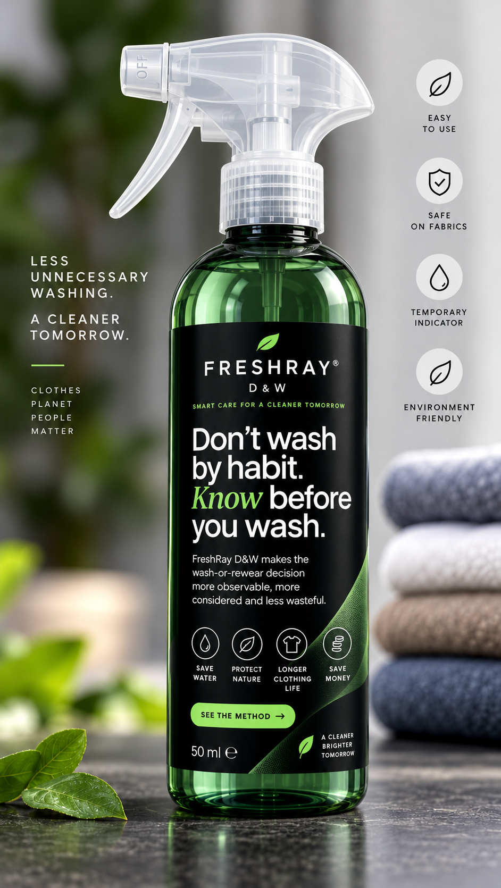
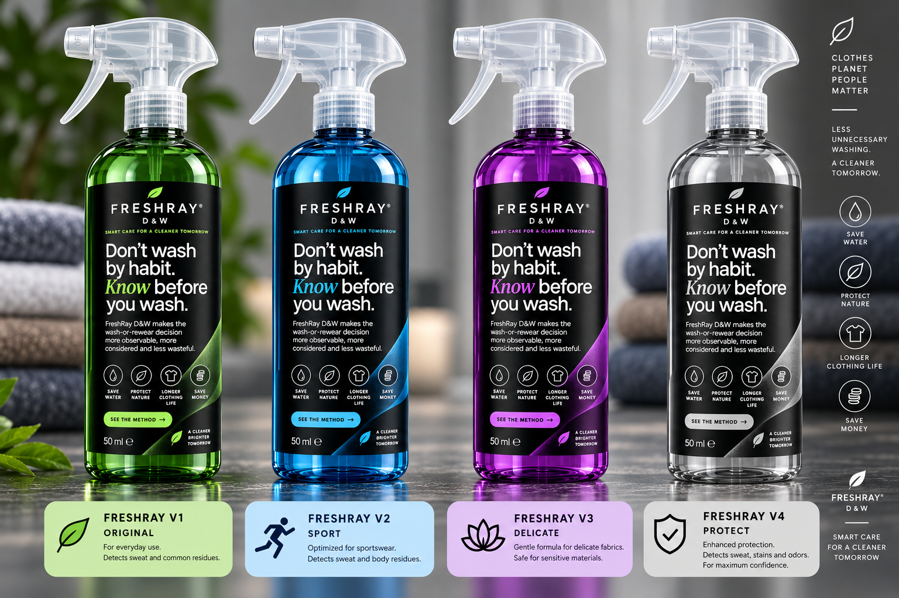
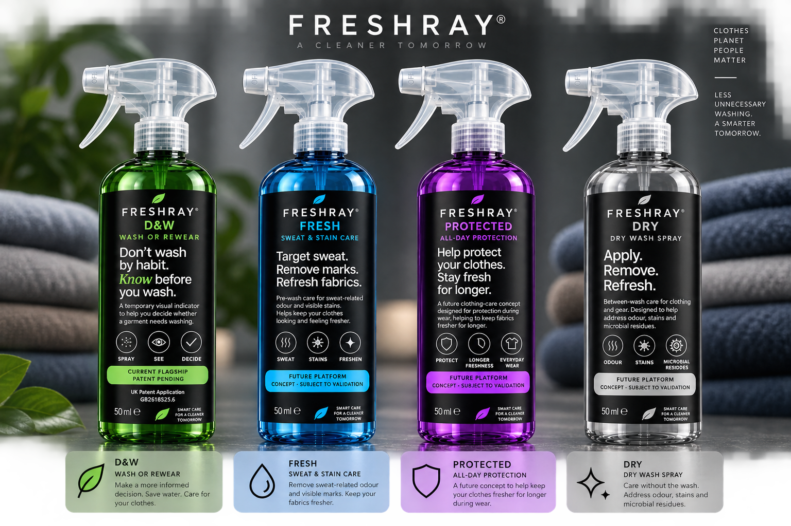

FreshRay D&W is a temporary visual signal for worn clothes. Spray a small test area, look at the result, then decide: wash or rewear.

Three steps instead of tossing everything into the laundry basket out of habit. A decision-support layer before washing, not a medical, laboratory or diagnostic test.
Apply to a small, discreet test area on a worn garment, where sweat and residue build up first.
A temporary visual contrast, designed to be visible to the naked eye in ordinary light.
Use the signal as one input to decide: wash the garment or wear it again.
Made for quick local checks on the main sweat and friction zones, as set out in UK Patent Application GB2618525.6.
A quick check of the underarm areas.
A local check on the inner seam, so heavy fabrics aren’t washed more than needed.
Quick check of the high-contact toe and heel zones.
Variants V1 to V4, each made for a different fabric and a different kind of day. Formulations are in development: signal performance, textile compatibility and safety are subject to validation.

D&W is the patent-pending flagship. Fresh, Protected and Dry are future concepts, not yet validated.

Wash or Rewear. Applied to worn clothing, a temporary visual signal supports your wash-or-rewear decision.
Applied to textile before washing. Intended to help reduce sweat-related odor and visible sweat marks or stains.
Applied to the underarm area of clothing before wear. Intended to help reduce odor development during the day.
For shoes, helmets, sports equipment and other hard-to-wash items. A dry-care concept to help reduce odor and microbial load between washes.
Less unnecessary washing, a cleaner and smarter tomorrow. Talk to us about product inquiries, validation partnerships or licensing.
ceo@slid-tech.com